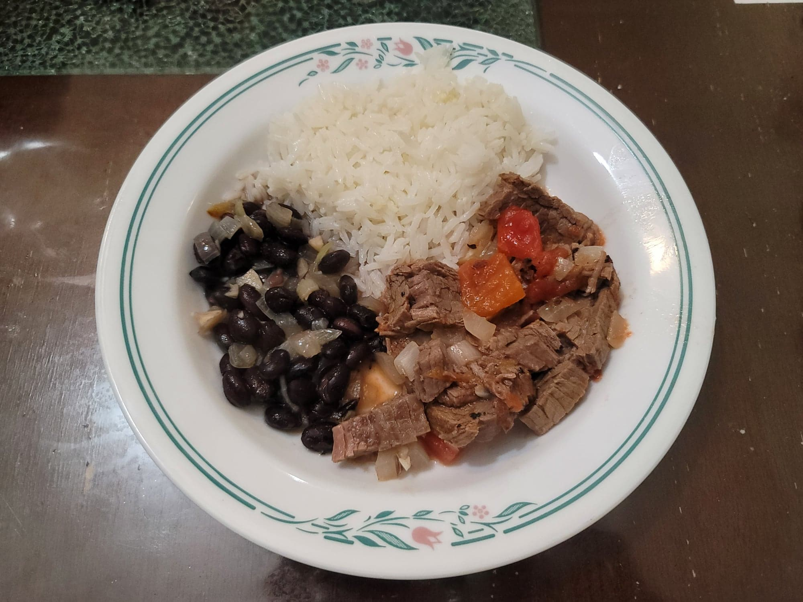

Pabellon Criollo

Ingredients:
Beef:
- 1 1/2 lb Flank steak
- 2 tsp Beef bouillon
- Water, to cover
- 2 tbsp Butter
- 1 small-medium Onion, diced
- 2 cloves Garlic, minced
- 1 15 oz can Diced tomatoes
- Salt, to taste
- Black pepper, to taste
Rice:
- 4 tbsp Canola oil
- 2 cloves Garlic, minced
- 1/2 tsp Salt, or to taste
- 2 cups Water
- 1 cup Rice
Beans:
- 1 15 oz can Black beans, with liquid
- 1 small Onion, diced
- 2 cloves Garlic, minced
- 2 tbsp Canola oil
- 1/2 cup Water
- 1 tbsp White vinegar
- 1 1/2 tsp Cumin
- 1 tsp Chicken bouillon
- 1/2 tsp Garlic powder
- Salt, to taste
Instructions:
- Place the beef into a small pot with the beef bouillon and water to cover. Bring to a boil and then reduce to a simmer and cover. Cook for 90 minutes or until tender. Then remove the steak from the liquid to let rest and reserve 1 cup of the liquid.
- For the rice, heat the oil in a saucepan over medium heat. Add in the garlic and sauté for 1-2 minutes. Then add in the water and salt. Once it comes to a boil, add in the rice, cover, and reduce to low. Let cook for 10-15 minutes or until done. Then fluff the rice with a fork.
- For the beans, heat the oil in a pan over medium heat. Add in the onion and garlic and sauté until translucent, about 5 minutes. Then add in the rest of the beans ingredients. Simmer on low until the beans are soft and the sauce has reduced.
- Once the beef has rested, slice it into thin slices against the grain. Heat the butter over medium heat and add in the onions and garlic. Sauté until translucent, about 5 minutes. Then add in the beef, 1 cup of reserved beef broth, tomatoes, salt, and pepper. Let simmer for 5 minutes and then remove from heat.
- Serve the beef, beans, and rice together with a side of fried plantains. Serve hot.